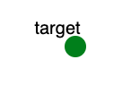

Overview
The purpose of this lab is to demonstrate how services are started and stopped in Linux, and to teach students how to permanently disable unneeded services on Linux. Students will start, stop, and disable services. Unneeded services can be a potential security risk, so students should learn how to disable unneeded services in order to descrease the probability of a security compromise.
Recommended Reading
Introduction to Linux: A Hands On Guide
Chapter 4, sections 4.2.4 and 4.2.5
http://tldp.org/LDP/intro-linux/html/sect_04_02.html
Introduction
OS hardening is the practice of configuring a machine to make it more resistant to attack. Most operating systems ship with many unnecessary services and applications running. The more applications and services that run, the greater the chance is that one or more of them will be vulnerable to attack. The purpose of this lab is to demonstrate how to shut down unnecessary services on Linux.
Terms used in this lab
Some of the files and folders you'll encounter in this lab are named confusingly. The following is a brief introduction to the terms you'll see:
- inetd
- This is the "Internet super-server". (The word "inet" stands for "internet".) In the old days, this program was used as a front-end to many services. It's not used as much anymore.
- /etc/rc5.d
- This directory stores symbolic links (shortcuts) to scripts in /etc/init.d/. In this lab, you'll be renaming files in this directory.
Assignment Instructions
Setup
- If you don't have an account, follow the instructions here.
-
Create an instance of this exercise by following the instructions here, using
oshardeningas Lab name. Your topology will look like below:
. - After setting up the lab, access your
targetnode.
Tasks
Part 1: Find Running Services
-
View the list of open ports with the following command:
netstat -t -u -lNetstat is used to show open network connections. The -t option specifies TCP ports, the -u option specifies UDP ports, and the -l option specifies only open (or "listening") ports. Note that there are quite a few ports open.
-
It would be nice if we knew which programs had those ports open. Netstat's -p option will show the process name that owns each open port. The output will be wide, so maximize the terminal window before running the command. Become root, and run the following:
netstat -t -u -l -pThis shows the same information as before, except now process names and IDs are included. If you do not see them, try with
sudoin front. Take a screenshot of this window.
The interesting columns in the netstat output are Proto, Local Address, and PID/Program name. Proto stands for protocol. It will be either TCP or UDP (or sometimes TCP6 or UDP6). Local Address is the IP address and port that the service is listening on. The IP address is usually "*", indicating that the service is listening on all available network connections. For some services, the IP address is "localhost" (or "127.0.0.1"), indicating that the service will accept connections only from the local machine. Services that listen on localhost are generally not a security concern, so we won't bother with those. PID/Program name gives the process ID and name of the program that is listening on the port.
The name of the service is generally the same as the name of the program in the PID/Program name column. For services controlled by inetd, the program name will be inetd, and the name of the service will be found in the Local Address column.
Each of the services that is running represents a potential opportunity for an intruder to break into the computer (except for the ones that run only on localhost). In order to secure the system, it is necessary to shut down unneeded services. For this lab, we're going to shut down all external services except SSH and link-local multicast name resolution (LLMNR). You need SSH to access the node. The rest of listed services are used by SPHERE to control or monitor the node.
In Linux, there are multiple ways to start and stop services, and different distributions offer different tools to manage services. In this lab, we'll be using a very low-level method to manage services. The advantage of this method is that it will work on almost all Linux distributions, as well as some Unix systems.
Part 2: Shutting Down Services
Most running services are started or stopped with a script in the /etc/init.d directory. Usually, the script name will be the same as the program name, but not always. To stop a service, run its script with the argument "stop". For example, to stop sendmail, run the following as root:
service sendmail stopTo start or restart a stopped service, run the script with "start" instead of "stop", as root.
service sendmail startTo see a list of all the script in the relevant directory, execute the command "ls /etc/init.d/".
- In the netstat output from step 2 above, look at the "Program name" column. This will tell you which program to stop.
- Go through the list of programs and stop each unnecessary service. (Ignore the services that listen on localhost.) There are a few services whose names don't match the script names, but the names are similar. The exception to this is named, which is part of bind9. If you accidentally stop a service you didn't intend to stop, simply start it again.
- Run "netstat -t -u -l -p" again and copy/paste its output into your lab report. If all went well, you should have only a few services running.
- Reboot the nodeA machine. After logging back in, run "netstat -t -u -l -p" and observe the results. What happened to the list of open ports?
Part 3: Making it stick
All of the services you stopped have come back after a reboot. This is because Linux starts all configured services at startup. You stopped the services, but you didn't change the configuration, so all the services came back up. In this part of the lab, we're going to change the configuration so that the services won't start automatically.
Part 3.1: Ordinary Services
The system determines which services to start based on the default runlevel. (For more information on runlevels, see http://wiki.linuxquestions.org/wiki/Run_Levels). In our Ubuntu installation, the default runlevel is 5, so the system services are controlled by the scripts in /etc/rc5.d/. The name of each script is the letter S or K, a two-digit number, and the name of the service. If a script name starts with an S, the service is Started; if it starts with a K, it is Killed. The numbers indicate the order in which the scripts should be run. In this part of the lab, you will disable unneeded services.
- Run "netstat -t -u -l -p" to see which services need to be stopped.
- List contents of
/etc/rc5.d/directory -
For each service that you stopped earlier, make the changes stick by running:
systemctl disable service-nameVerify that in
/etc/rc5.dscripts relating to that serivice that started with S, now start with K. For example, SXXsendmail becomes KXXsendmail, where XX is a two-digit number. List new contents of the directory and identify files that changed. - Write down which services you stopped for good, and include the list of commands your lab report.
Part 3.2: Inetd Services
Some services are run by inetd. To ensure they are started or stopped you would need to edit inetd's configuration file /etc/inetd.conf. Submit your new /etc/inetd.conf file in the lab report.
Part 3.3: Services After Reboot
After you have turned off all unecessary services reboot the machine and run netstat again. Include this output in your lab report.
What can go wrong
- Note that the -p option to netstat requires root privileges. If you run "netstat -t -u -l -p", and there are only dashes in the "PID/Program name" column, you don't have root privilegs. Use "sudo" to run as root.
- One common issue is students being unable to find the scripts that control certain services. First, remember that services that listen only on localhost or 127.0.0.1 can be ignored for this exercise. Secondly, the name of the script doesn't always exactly match the name of the service. However, the names will often resemble each other.
- If you kill a service that needed to stay on you may fail to log onto your node or may need to input a password on each login. To fix this problem restart your experiment. You will need to redo the lab from the start.
Submission Instructions
Submit the following in your report (tar-zipped into a single file):
- Netstat's output from part 1, before you took any actions.
- List of commands you ran to stop the unnecessary services, and which service was affected in part 2.
- Netstat's output with only essential services running (SSH and LLMNR).
- List of commands you ran to make changes stick in part 3.
- List of files in /etc/rc5.d directory that changed, and how they changed (show before and after)
- Your new /etc/inetd.conf file.
-
Screenshot of netstat's output from part 3.